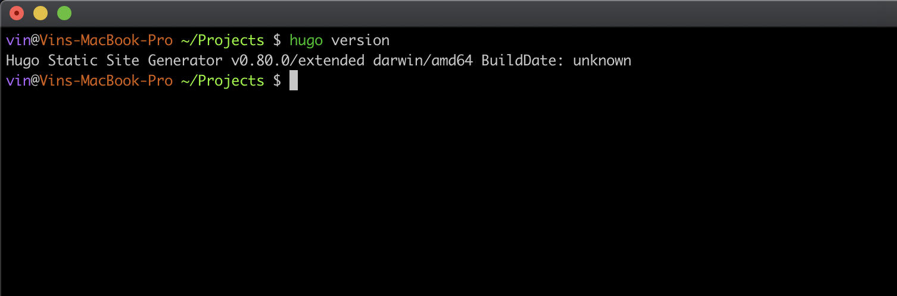
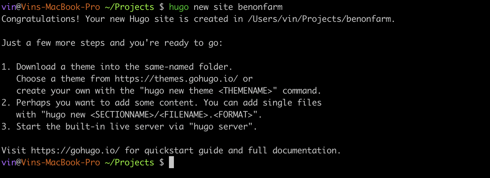
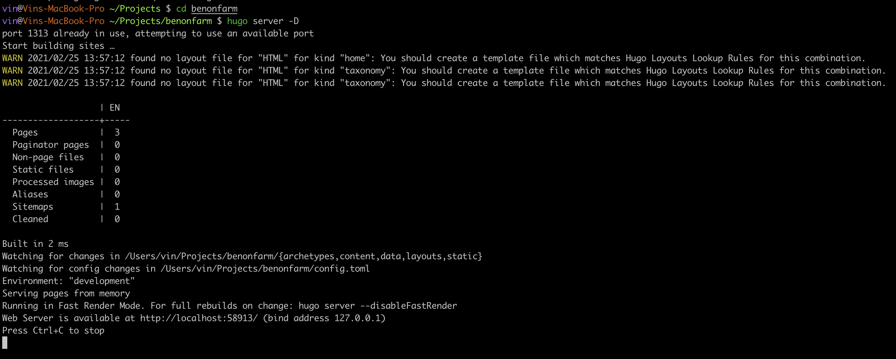
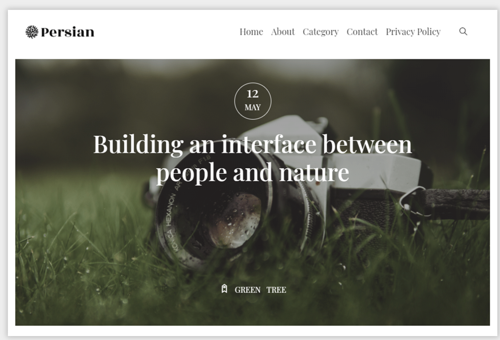
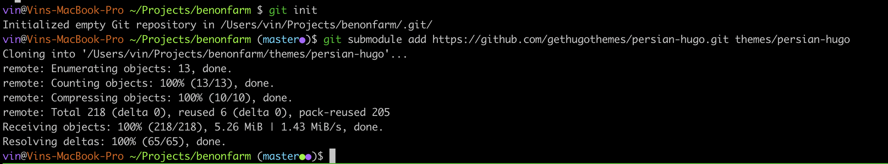
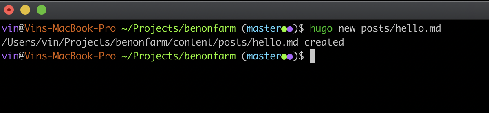
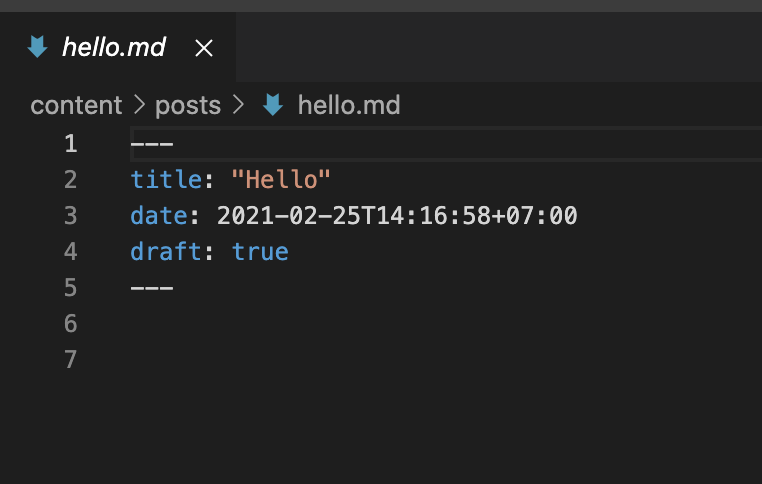

Viết Blog đơn giản với Hugo
Chào các bạn!
Hôm trước chúng ta đã tạo static page với Github Pages và link với domain, hôm nay chúng ta sẽ từng bước viết một blog và đẩy lên Github Pages.
Có rất nhiều công cụ để giúp chúng ta có thể viết một trang blog tĩnh (static site), và hugo là một công vụ dễ dàng, hiệu quả để làm việc đó.
Nào chúng ta bắt đầu thôi!
Bước 1: Cài đặt Hugo
Lưu ý: mặc dù hugo được xây dừng bằng Golang, nhưng bạn không cần cài bất kì công cụ nào của Go để chạy được hugo, việc cài đặt sẽ sử dụng tập tin binary để chạy.
Nếu bạn đang dùng MacOS, hãy cài hugo đơn giản với công cụ brew
brew install hugo
hoặc với MacPorts
port install hugo
Nếu bạn dùng Windows, hãy cài hugo với công cụ Chocolatey
choco install hugo -confirm
Sau khi cài đặt xong, bạn hãy kiểm tra lại cài đặt bằng lệnh
hugo version

Bước 2: Tạo blog
Bạn chạy lệnh sau để khởi tạo một dự án bằng hugo.
hugo new site <name>
với <name> là tên website bạn muốn tạo.
Ví dụ: 
Sau đó, bạn vào thư mục website đã tạo, chạy lệnh sau để host website ở localhost của bạn
hugo server -D

Như ví dụ trên, website của bạn đang chạy ở http://localhost:58913/. Vào địa chỉ đó bạn sẽ thấy một trang trắng trống không.
Tiếp theo, chúng ta sẽ cài theme cho trang blog của chúng ta.
Bước 3: Cài theme
Bạn vào trang themes.gohugo.io và tìm cho mình một theme ưng ý nhất.
Ở đây mình chọn theme Persian Hugo làm ví dụ.

Theme hugo đều dùng source ở Git và cài bằng submodule của Git.
Bạn cài thêm bằng các bước sau:
git init
git submodule add https://github.com/gethugothemes/persian-hugo.git themes/persian-hugo

Sau khi chạy lệnh trên, git sẽ clone source code của theme và đưa vào thư mục themes/persian-hugo
Bạn chạy lệnh sau để thiết lập theme cho website
echo 'theme = "persian-hugo"' >> config.toml
Bước 4: Viết bài post đầu tiên
Sau 3 bước trên cơ bản chúng ta đã tạo và cài đặt được theme cho website, bước này chúng ta sẽ viết một bài post, thêm nội dung cho trang web.
Chạy lệnh sau để tạo một bài post.
hugo new posts/hello.md

Ở đây mình tạo một post có tên là hello với dịnh dạng Markdown
Chúng ta có file posts/hello.md với nội dung sau

draft: true có nghĩa đây là post nháp, khi nào hoàn thành, bạn chuyển thành draft: false để deploy.
Bước 5: Config cho website
Theme của website cung cấp nhiều khả năng để config như title, header, footer.
Các bạn tham khảo exampleSite của theme ở themes/persian-hugo/exampleSite để config lại cho phù hợp nhé. Chi tiết về config ở đây.
Ví dụ file config.toml
######################## default configuration ####################
baseURL = "https://benonfarm.com/"
title = "Benon Farm"
theme = "persian-hugo"
languageName = "En"
languageCode = "en-us"
# post pagination
paginate = "5"
# disqus short name
disqusShortname = ""
publishdir = "../username.github.io/"
############################# output ##############################
[outputs]
home = [ "HTML", "RSS", "json"]
# render unsafe html
[markup.goldmark.renderer]
unsafe = true
############################# Plugins ##############################
# CSS Plugins
[[params.plugins.css]]
link = "plugins/bootstrap/bootstrap.min.css"
[[params.plugins.css]]
link = "plugins/themify-icons/themify-icons.css"
# JS Plugins
[[params.plugins.js]]
link = "plugins/jQuery/jquery.min.js"
[[params.plugins.js]]
link = "plugins/bootstrap/bootstrap.min.js"
[[params.plugins.js]]
link = "plugins/search/fuse.min.js"
[[params.plugins.js]]
link = "plugins/search/mark.js"
[[params.plugins.js]]
link = "plugins/search/search.js"
################################ menu ##################################
[[menu.main]]
name = "Home"
url = "/"
weight = 1
[[menu.main]]
name = "About"
url = "about"
weight = 2
[[menu.main]]
name = "Category"
url = "categories/nature/"
weight = 3
[[menu.main]]
name = "Contact"
url = "contact"
weight = 4
[[menu.main]]
name = "Privacy Policy"
url = "privacy-policy"
weight = 5
#################### default parameters ################################
[params]
logo = "images/logo.png"
# Meta data
description = "This is meta description"
author = "Themefisher"
# search
search = true
# contact form action
contact_form_action = "#"
# copyright
copyright = "Designed By [Themefisher](https://themefisher.com/) & Developed By [Gethugothemes](https://gethugothemes.com/)"
# Preloader
[params.preloader]
enable = true
preloader = "" # use jpg, png, svg or gif format.
Bạn chú ý config publishdir sẽ chỉ định thư mục build của website để publish các post của bạn.
Thông thường, bạn nên clone git repo của dự án Github Pages ở bài trước để cùng cấp với dự án Hugo, khi build thì nội dung sẽ được đưa vào Github Pages, sau đó bạn chỉ cần commit và đẩy nội dung Github Pages lên thôi.
Và đây là thành quả.

Bước 6: Build và đẩy lên Github Pages
Bạn chạy lệnh sau để build website
hugo -D
Sau đó vào thư mục build, commit và push code lên Github Pages.
Trên đây là cách để các bạn có tự mình xây dựng một trang web tĩnh bằng Hugo, sử dụng cú pháp Markdown để viết content và publish nội dung lên Github Pages.
Chúc các bạn lập trình vui.